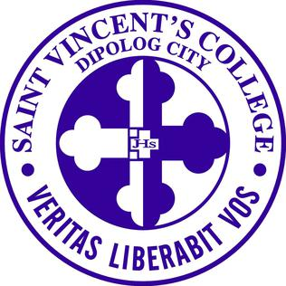

1.Jose Rizal Memorial State University
The Jose Rizal Memorial State University (JRMSU; Filipino: Pag-alaalang Pamantasang Pampamahalaan Jose Rizal) is a state university in Zamboanga del Norte, Philippines. It is mandated to provide higher professional, technical, special instructions for special purposes and promote research and extension services, advanced studies and progressive leadership in education, agriculture, arts and sciences, engineering and other fields. Its main campus is located in Dapitan. It became a university in 2010 by virtue of Republic Act 9852
1.Andres Bonifacio College
Andres Bonifacio College (ABCollege or ABC) is a community college institution in the Philippines. Its campus is located at College Park, Brgy. Miputak, Dipolog. ABCollege offers course programs from kindergarten to postgraduate levels. Alumni and students of the college are referred to as Bonifacians.
Andres Bonifacio College was founded in 1940 as Andres Bonifacio Institute by Amando B. Amatong and Felicidad S. Amatong. The college was named after Andres Bonifacio, a revolutionary leader, to which Amando himself found inspiration being born to poverty in Dalaguete, Cebu. The original location of ABI used to be in what is now Festival Shopping Arcade 1 in Rizal Avenue corner Magsaysay Street, Barangay Central.
Amando Amatong died on April 21, 1943, leaving his wife Felicidad to operate the institute while taking care of their eight young children. To maintain ABI's operation, Amando's youngest brother Silverio B. Amatong was appointed as the institute's president. From its original campus used since its founding, the college permanently transferred to what it is now known as College Park in Barangay Miputak after a fire razed the institute's buildings and nearby structures to the ground in 1968.
2.Saint Vincent's College
St Vincent's College is a private, nonsectarian, non-stock and non-profit institution approved and authorized by the Department of Education and the Commission on Higher Education to offer course programs from kindergarten to postgraduate levels. SVC was the first institution in the Province of Zamboanga del Norte to be granted government authority and recognition to offer a doctorate degree.
It is located on Padre Jose Ramon Street, Estaka, Dipolog, Zamboanga del Norte.
Alumni and students of the college are referred to as "Vincentians".
3.DMC-College Foundation
he DMC-College Foundation, Inc. (DMC-CFI), also known as DMC De La Salle, supervised by De La Salle Brothers, is a paramedical institution of the province of Zamboanga del Norte. It is situated in suburban Dipolog and occupies 22,500 square meters of land area. Its sprawling expanse contains several buildings which include the DMC Hospital and its laboratories, the four-storey Basic Education and School of Hotel Restaurant and Institution Management Building, the six-room IT Center, the four-storey Nursing Building with the Nursing Arts Center on the fourth floor and on the top floor the campus radio 100.5 Radyo Natin Dipolog (formerly 100.5 Hot FM Dipolog) and the library which covers the entire ground floor, the Arts and Sciences building with separate structures for a Zoology lab, the cafeteria, and the DMC Covered Court for sports and other activities.
4.Dipolog City Institute of Technology
Dipolog City Institute of Technology (DCIT) is a tertiary educational institution located in Dipolog City, Zamboanga Del Norte